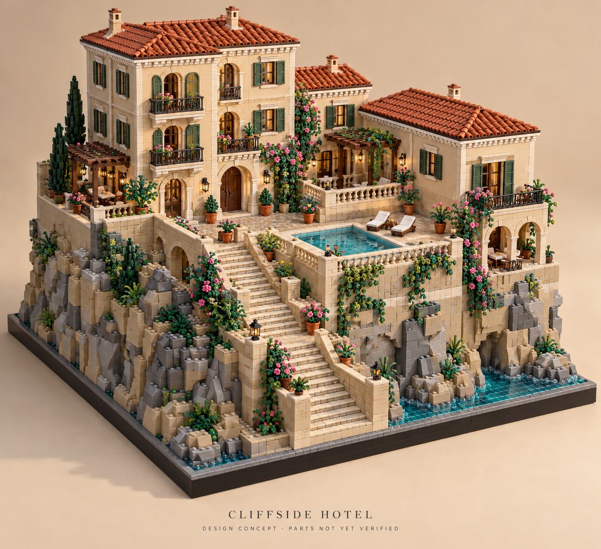

A three-storey Mediterranean hotel, a two-storey guest wing and a connecting pavilion above a pool terrace and broad stone staircase. These views are rendered from the actual LDraw parts and placements.
Assembly approach
Build on a flat surface. Complete the foundation and terrace structure first, then work floor by floor across all three buildings. Furnish each level before fitting the next ceiling. Assemble each pitched roof panel separately and attach it to its matching bar-and-clip pairs at 30°. Add the flowering planters last.
The model uses 18 assembly stages. A stage groups many placements; it is not a one-piece LEGO instruction step. Use Studio to rotate or hide assemblies when the coordinates alone are insufficient. Roof panels and facade inlays have explicit transforms and parent connections below.
Coordinate conventions and known limits
For ordinary parts, grid X/Y gives the minimum footprint corner in studs and Z gives the bottom in plate heights. One stud = 20 LDraw units = 8 mm; one plate = 8 LDraw units = 3.2 mm. In LDraw, positive Y points down. The origin and 3×3 rotation matrix are authoritative for every piece.
Roof-panel grid coordinates are local to that panel; their world transform is included in the model JSON. Frame inserts and vertical facade inlays use their parent connection and world transform. Mounting footprints are not the full outline of leaves, mugs or hinge arms.
Body checks cover ordinary parts in world coordinates and each roof panel's local coordinates. The mesh probe examines special parts and tilted instances against neighboring geometry. It excludes coplanar contact and full containment. Crossings inside matching stud or clip grip envelopes are reported separately as intended engagement. These checks cannot establish physical strength.
How the build differs from the approved concept image
The 2,000+ piece draft preserves the stepped architectural silhouette, balconies, warm roofs, raised terrace, pool and stairs. It uses white/tan walls, reddish/dark brown roofs, simpler straight stairs and smaller rockwork. The concept's orange tiled roof, elaborate arches, shutters, railings, winding stairs and dense planting are not reproduced literally.
